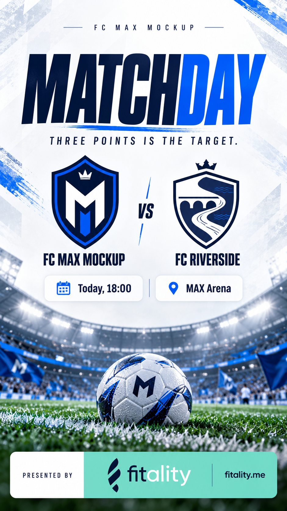

01 / Der Verein
Sport passiert.
Spielplan · Tabelle
Ergebnisse · Vereinsmomente
MAX macht aus Spielplänen, Resultaten und Vereinsmomenten Inhalte, die Menschen bewegen. Und aus dieser Aufmerksamkeit neue Möglichkeiten für lokale Sponsoren.
Kostenlos für Vereine · Im Browser · Für alle eure Teams
Der Spielplan steht längst fest. MAX bereitet die Geschichten und Sponsoring-Plätze schon vorher vor, aktualisiert sie am Spieltag und lernt anschliessend aus ihrer Wirkung.
Spielplan · Tabelle
Ergebnisse · Vereinsmomente
Plant. Erstellt. Kuratiert.
PLAN → LIVE → LEARN
WhatsApp · Instagram
Facebook · TikTok · Web
Fans · Teams · Eltern
Gegner · lokale Netzwerke
Ein Vereinsauftritt. Teams werden intern getrennt geplant; veröffentlicht wird nach Relevanz und passender Häufigkeit.
Vor dem Spiel: Gegner, Spielzeit und Ort – optional mit bestätigter Aufstellung.
Nach dem Spiel: das bestätigte Endresultat und der kurze Rückblick.
Die vom Verein bestätigte Auszeichnung – mit freigegebenem Namen und Bild.
MAX bereitet Inhalte 7–14 Tage voraus vor. Derbys, Tabellenlage und kommende Spiele liefern den Kontext.
Resultate und besondere Szenen ergänzen die vorbereitete Geschichte. Als Karte, Text oder Videoformat.
Aufrufe, geteilte Inhalte und Sponsor-Klicks zeigen, was funktioniert – und was wir nächstes Mal anders machen.
Teams, Farben, Datenquellen und Kanäle festlegen. Ihr bestimmt die Spielregeln für Inhalte und Sponsoren.
Spieltag-Karten und Beiträge entstehen im Vereinsdesign. Spieler:innen können eigene Momente einreichen.
Gute Inhalte werden geteilt. Freigegebene Sponsoren unterstützen passende Momente.
Das Standardangebot wird über Sponsoring finanziert.
Deine Marke gehört dorthin, wo deine Nachbarschaft mitfiebert. Mit MAX buchst du konkrete Sportmomente oder lässt den Autopilot einen Vorschlag machen.
Einzelplatzierungen ab CHF 25. Erst Vereinsfreigabe, dann Umsetzung. In der Demo werden keine Zahlungen ausgelöst.
Wie viel, wo und wie lange? MAX plant innerhalb deiner Grenzen und begrenzt die Häufigkeit.
Im grossen Kalender findest du die Spieltage. Darunter bearbeitest du Botschaft, Logo und Vorschau.
Der Verein akzeptiert deine Marke. Reicht das Inventar nicht, schlägt MAX mehr Vereine oder Zeit vor. Restbudget bleibt frei.
Erlebe MAX als Vereinsverantwortliche:r, Sponsor oder Spieler:in. Fiktive Daten machen die Abläufe greifbar.
Das Konzept zeigt das Zielbild. Reale Sportdaten, automatische Plattform-Veröffentlichung, Zahlungen und Analytics sind noch nicht angeschlossen.